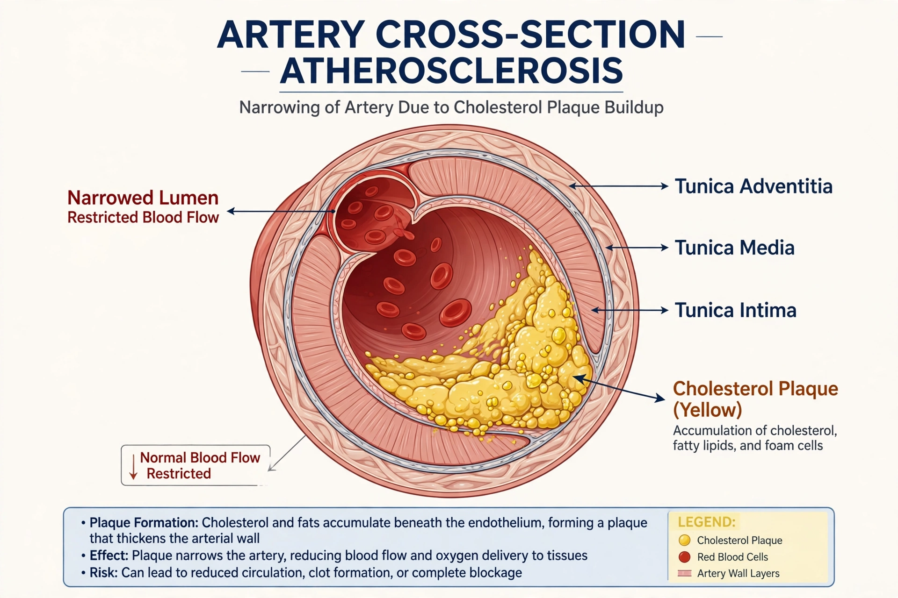

Hypercholesterolemia, also called high cholesterol, is the presence of high levels of cholesterol in the blood. It is a major risk factor for atherosclerosis, coronary heart disease, heart attack, and stroke. Because it usually causes no symptoms, it is typically detected by a blood test (a lipid profile) and managed with lifestyle changes and lipid-lowering drugs such as statins.

| Hypercholesterolemia | |
|---|---|
| Specialty | Cardiology, endocrinology |
| Symptoms | Usually none; xanthomas in severe genetic forms |
| Causes | Diet, obesity, genetics (familial hypercholesterolemia), hypothyroidism, diabetes |
| Treatment | Diet, exercise, statins, ezetimibe, PCSK9 inhibitors |
Most cases reflect a combination of genetic susceptibility and lifestyle: diets high in saturated and trans fats, physical inactivity, obesity, and smoking. Secondary causes include hypothyroidism, nephrotic syndrome, cholestatic liver disease, and certain medications.
Familial hypercholesterolemia (FH) is an inherited disorder, most often caused by mutations in the LDL receptor gene (LDLR), that severely impairs clearance of LDL cholesterol. Heterozygous FH affects roughly 1 in 250 people and causes LDL levels about twice normal from birth; untreated, it leads to premature cardiovascular disease. The rare homozygous form can cause heart disease in childhood. Physical signs include tendon xanthomas and corneal arcus.
Excess LDL cholesterol infiltrates artery walls, where it is oxidized and taken up by macrophages, turning them into foam cells. Over decades these deposits grow into atherosclerotic plaques that narrow arteries and may rupture, triggering thrombosis, myocardial infarction, or stroke.
Diagnosis rests on a lipid profile measuring total cholesterol, LDL cholesterol, HDL cholesterol, and triglycerides. In the United States, total cholesterol above 200 mg/dL is considered borderline high and above 240 mg/dL high, though treatment decisions are based on overall risk. Screening is recommended for adults over 40 and for children with a family history of FH.
First-line management is lifestyle modification: a diet low in saturated fat, regular aerobic exercise, weight loss, and smoking cessation. When drugs are needed, statins are first choice; ezetimibe, bile-acid sequestrants, and PCSK9 inhibitors (such as evolocumab) are added for inadequate response or very high risk. Severe homozygous FH may require lipoprotein apheresis.
High cholesterol is extremely common: in high-income countries roughly a third or more of adults have elevated LDL cholesterol, and raised cholesterol is estimated to cause several million deaths globally each year through ischemic heart disease and stroke.